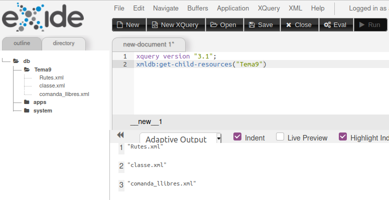
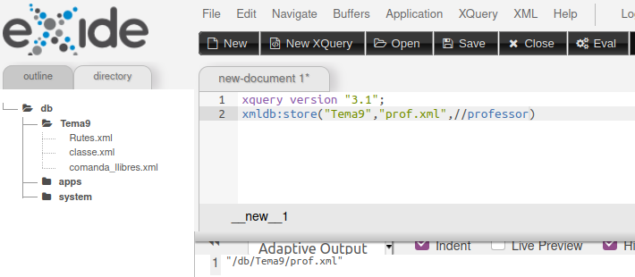
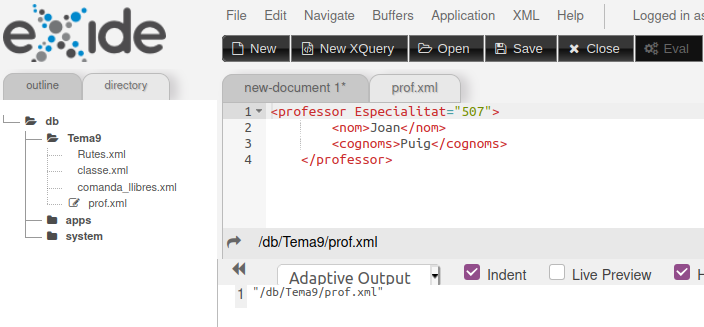

6.2.7 - Funcions de eXist-db de manipulació de BD
A mode únicament il·lustratiu, anem a comentar una sèrie de funcions de eXist-db que serveixen per a modificar les col·leccions i documents de la Base de Dades.
Són unes funcions que estan dins del paquet xmldb, i per tant començaran totes per aquest prefix.
Com que serveixen per a modificar la Base de Dades, serà obligatori autenticar-se (recordeu que l'usuari era admin / admin).
Veurem només algunes de les funcions. Si voleu aprofundir, aquesta és la pàgina de la documentació: http://exist-db.org/exist/apps/fundocs/view.html?uri=http://exist-db.org/xquery/xmldb
xmldb:create-collection
Crea una col·lecció, especificant també la col·lecció de qui dependrà
xmldb:get-child-collections
S'obtindran totes les subcol·leccions de la col·lecció especificada.
xmldb:get-child-resources
S'obtindran tots els documents de la col·lecció especificada.
Per exemple:
xmldb:get-child-resources("Tema9")

xmldb:store
Guarda un document en la Base de Dades. Se li han d'especificar 3 paràmentres:
- Nom de la col·lecció on es guardarà el document
- Nom del document
- Contingut del document
Per exemple:
xmldb:store("Tema9","prof.xml",//professor)
generarà el document prof.xml dins de la col·lecció Tema9, i el contingut és el resultat de fer la consulta XPath //professor, que obté tots els elements professor de la Base de Dades (només hi ha un):
|  |  |
Llicenciat sota la Llicència Creative Commons Reconeixement NoComercial CompartirIgual 2.5